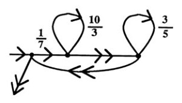

A Fractran program is a list of fractions and an initial positive integer input.
Any number that can't be divided by any other number, apart from itself and one, is prime. Since primes can't be divided, we can think of them as the DNA of other numbers. In Fractran, each prime is a register and their exponent is their value.

The Accumulator
The state of the Accumulator is held as a single number, whose prime factorization holds the value of registers(2, 3, 5, 7, 11, 13, 17, ..). For example, if the state of the accumulator is 1008(2⁴ × 3² × 7), r2 has the value 4, r3 has the value 2, r7 has the value 1, and all other registers are unassigned.
| Accumulator | Registers | |||
|---|---|---|---|---|
| r2 | r3 | r5 | r7 | |
| 6 | 1 | 1 | ||
| 18 | 1 | 2 | ||
| 1008 | 4 | 2 | 1 | |
| 5402250 | 1 | 2 | 3 | 4 |
The Operand

An Operand is a positive fraction, each fraction represents an
instruction that tests one or more registers, represented by the prime factors
of its numerator and denominator. For example, to evaluate the result of
holding 18 in the accumulator with a fraction operand of 2/3, we
will take the state of the accumulator, if multiplying it by this fraction will
give us an integer, we will update the accumulator with the result.
18(21 × 32) 2/3(2+1, 3-1) = 12(22 × 31)
Operations become more readable when broken down into their primes. We can think of every prime number as having a register which can take on non-negative integer values. Each fraction is an instruction that operates on some of the registers.
| 2/3 | 15/256 | 21/20 |
|---|---|---|
| (21)/(31) | (31 × 51)/(26) | (31 × 71)/(22 × 51) |
if(r3 >= 1){ r3 -= 1; r2 += 1; return; } |
if(r2 >= 6){ r2 -= 6; r3 += 1; r5 += 1; return; } |
if(r2 >= 2 && r5 >= 1){ r2 -= 2; r5 -= 1; r3 += 1; r7 += 1; return; } |
The Program
A Program is a list of fractions distributed over lines together with an initial positive integer input. A program may have any number of lines, and a line might have the form:
210 1: 1/7 ->2, 1/3 ->1 2: 10/3 ->2, 1/1 ->3 3: 3/5 ->3
You can interpret a fraction as saying if the current value of each register is greater than or equal to the value specified by the denominator, you subtract from the registers all of the values in the denominator, add all the values specified in the numerator. If any register is less than the value specified in the denominator, continue to the next fraction.
00 | 210, 2^1 3^1 5^1 7^1 01 | 210 × 1/7 = 30/1, 2^1 3^1 5^1 ->5 05 | 30 × 10/3 = 100/1, 2^2 5^2 ->5 05 | 100 × 10/3 = 1000/3, .. 07 | 100 × 1/1 = 100/1, 2^2 5^2 ->9 09 | 100 × 3/5 = 60/1, 2^2 3^1 5^1 ->9 09 | 60 × 3/5 = 36/1, 2^2 3^2 ->9 09 | 36 × 3/5 = 108/5, .. 11 | 36, 2^2 3^2 Completed in 8 cycles.
- For each fraction in the list for which the multiplication of the accumulator and the fraction is an integer, replace the accumulator by the result of that multiplication.
- Repeat this rule until no fraction in the list produces an integer when multiplied by the accumulator, then halt.
Implementation
The language runtime can be implemented in about 300 lines.
cc fractran.c -o fractran view raw
The runtime expects a program in the format:
18 ; Set accumulator loop: 2/3 ->loop, 5/2 ->end ; Loop adding values of r2 and r3, and jump to 2 end: 0/0 ; Terminate.
A wise person marvels at the commonplace.Confucius
- Fractran Interpreter(C89)
- Fractran Interpreter(Web)
- Intro to Fractran
- Article on Esolang
- Collatz function
- Register Machine
- Remembering John Conway